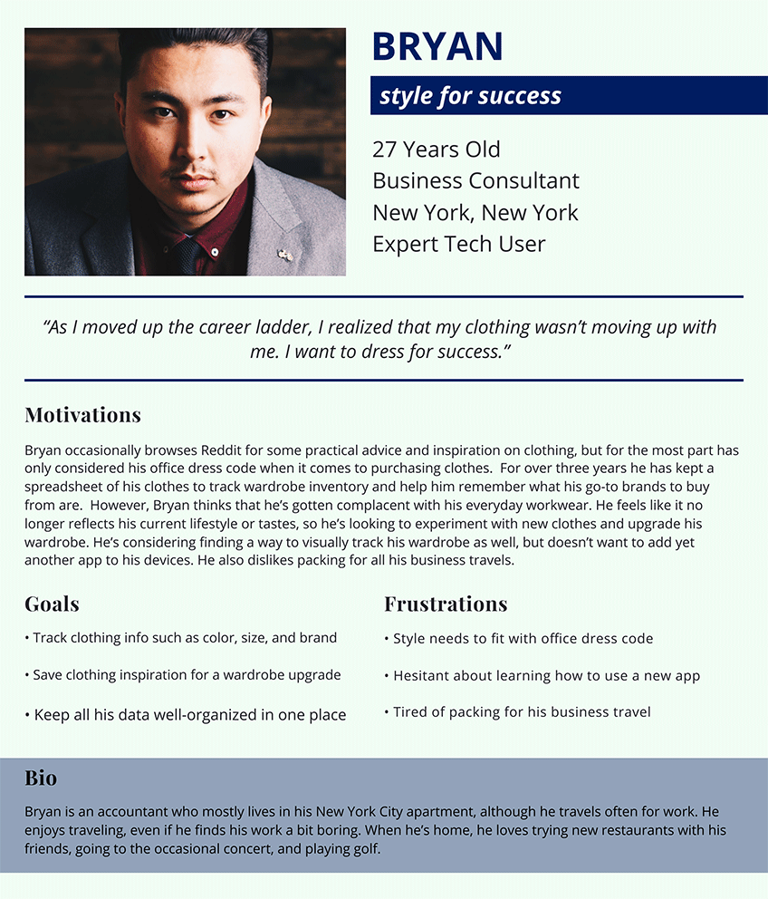
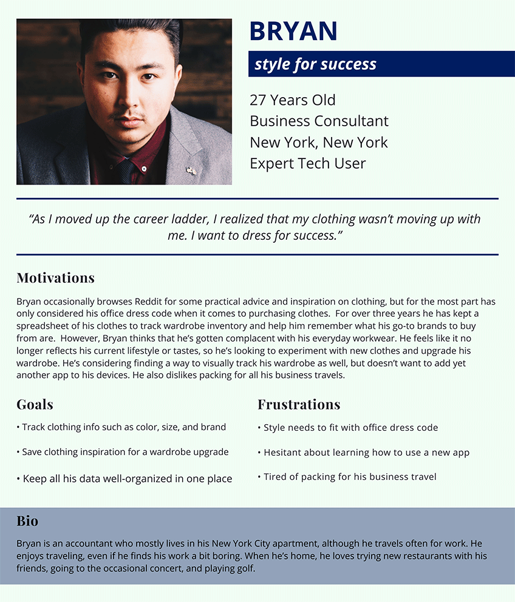
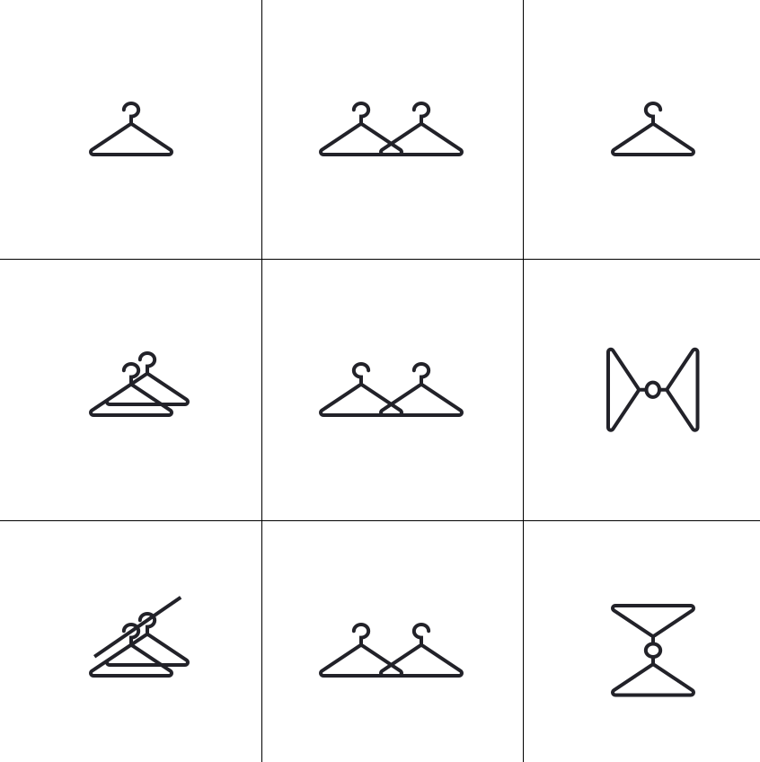

Wardrobe - curating personal style
For anyone who’s ever rummaged through their closet and felt like they had nothing to wear.
With the ability to inventory clothing, create outfits, and save style inspiration, users can feel confident in their personal style and dress for success — whatever success means to them.
See PrototypeDesign Roles
- UX Design
- Visual Design
- Brand & Identity
Deliverables
- Competitive Analysis
- User Surveys
- User Personas
- User Stories & Flows
- Wireframes
- User Testing
- Brand Identity
- Visual Design
- High Fidelity Prototype
Tools
- Figma
- Lucidchart
- InVision
- Maze
- Google Forms
The Problem
What to wear is never really taught - it’s just something people pick up (or don’t pick up) along the way. Individuals who didn’t pick it up are then thrown into many different social situations they’re unprepared for and are at a loss as to what to wear.
Young professionals, in particular, often find managing their wardrobes challenging. Many are still in the process of discovering their personal style, while navigating the world of professional dress codes for the first time. They struggle to strike the balance between expressing individualism and blending in with their environment. How can Wardrobe help these users?
The Solution
The Wardrobe app alows users to track their clothes in a virtual closet, create new outfits and track outfits worn, and save style inspiration. It encourages users to be intentional about what they wear, how they organize their clothing, and how they present themselves to the world. Wardrobe doesn’t push any individual styles or trends, but encourages users to experiment and figure out what works for their lifestyle.
"There is no roadmap to style. It's about self-expression, and, above all, attitude."-Iris Apfel
Research and Discovery
Competitive Analysis
Because Wardrobe a cloud organization tool that helps users manage their wardrobes, I studied a mix of popular cloud products and style apps. If I were to do this again I would study one more style-specific app.
The ideal wardrobe management app has:
- Pinterest’s rich visual content
- Evernote’s robust notetaking features
- Stylebook’s domain-specific features
Read my entire competitive analysis here.
I also studied critical reviews of lesser-known wardrobe management apps on the App Store:
When I try to create an outfit, it doesn’t let me press the check mark button to finish the outfit. Also, you can’t edit the outfits!
Seems like an amazing concept, but please let guys try too
Not to mention the fact that they make it so hard to find specific clothing items and when you search for them it just comes up with nothing
User Survey
To learn more about Wardrobe’s potential users and their frustrations with managing clothing, I conducted a survey on Google Forms. There were over 90 responders.
70% of survey participants reported having felt frustrated with their clothing, agreeing with the statement “I often feel like I have plenty of clothes but nothing to wear”.
79% keep track of their wardrobes mentally or not at all.
81% said they would be interested in trying a digital product that helps them plan and track their wardrobes.
95% would prefer to access such digital wardrobe content on mobile.
User Personas
I conducted follow-up interviews with several of the survey participants to obtain more qualitative data about Wardrobe’s potential users. Through these discussions, I gained valuable insight that allowed me to develop three user personas for reference throughout the design process. Check out the personas here.
 

Main Insights
Frustrations with clothing and figuring out what to wear are prevalent. 81% of responders were willing to try a product like Wardrobe.
A resounding majority would prefer this type of product to be a mobile app.
The major needs for a product like Wardrobe are to track individual clothing items, save fashion inspiration, take notes on style choices, and experiment with outfits.
Information Architecture
User Stories and User Flows
After studying Wardrobe’s competitors and talking to potential users, I had learned enough to create user stories, all of which you can read here. These user stories helped me prioritize product features as I moved forward in the design process. I then mapped out user flows for Wardrobe’s highest priority user stories. Check them out up close here.
Low Fidelity Wireframes
I now understood enough about user goals to begin wireframing what this product might look like. I began by sketching my ideas for Wardrobe’s screens on paper.
I then built digital wireframes with Figma. Throughout the wireframing process I regularly referred back to Apple’s Human Interface Guidelines to make sure I was designing a great user experience for an iOS app.
I used a card-based design because it chunks content for quick scannability and allows the image-based content to be the user’s main focus. It also mapped well with how users thought about organizing their physical clothing. Each piece of clothing had its own place in a specific drawer or closet. Each drawer contains clothing that all have similar defining attributes.
Main Insights
In building the user flows, I discovered that the user needs for this product fall into three major categories - organizing clothing, managing outfits, and saving inspiration. Thus, clothing, outfits, and inspiration became the basis for the app architecture.
Low Fidelity User Testing
After completing the low fidelity wireframes, I built an InVision prototype and conducted a usability test with four users. All were aged 18-35 and estimated their phone usage per week to be 11-26 hours or higher. The tests uncovered four problematic patterns in the prototype.
Problem 1
When testing flows for uploading content, users reported being unsure what various buttons would do because of unclear language.
Solution
I edited language and labeled buttons so users would have more clarity about their functions.
Problem 2
Users reported being confused by inconsistent navigation labels.

Solution
I edited language for consistency across different screens.
Problem 3
Users struggled to move content between categories because the function to do so was not located where they expected it to be.
I designed the initial wireframes so that users could move an item by accessing the “More options” menu, tapping “Move”, and selecting their desired category.
Half of the users I tested the Wardrobe prototype with were successful in moving an item with the previous flow, so I kept it in the next iteration. However, the other half had expected to be able to move an item after tapping “Edit”, a finding that surprised me.
In the initial wireframes, the Details Editor had no obvious options for moving an item to a different category. Users would have had to save the item, then select a category once prompted. Because this wasn’t clear, no users were able to move an item using this method.
Solution
I redesigned the Details Editor so that users would easily discover multiple paths for moving content.
Problem 4
Users complained at having to sign up for an account immediately.
Solution
I created a guest user flow, accessible from the Welcome screen, so that users would be able to browse the app and upload content before being prompted to sign up for an account.
Branding and Identity
Mindmap
I determined multiple words that should come to mind when one thinks of their wardrobe, and used these words for the basis of the Wardrobe brand. Wardrobe brand targets a younger audience, but should appeal to all those ambitious dreamers looking to achieve their goals and look stylish while doing it. Wardrobe seeks to impart the mindset that style is about more than “just clothes”; it's about self-expression and confidence.
Logo
I sketched multiple concepts for the Wardrobe logo. All were inspired from methods of clothing organization.
I eliminated clothing hooks early on because clothing hooks were less recognizable. Wardrobe’s logo should immediately evoke the idea of clothing or clothing organization. Users I asked for feedback immediately understood hangers and wardrobes, but were uncertain about the clothing hooks.
After another iteration of logos I decided to move forward with the wardrobes, symbolic of the product name. Wardrobes also convey the idea of clothing organization on a macro level more than hangers do.
Typography
I selected Playfair Display as the brand typeface for major headlines and Open Sans as the brand typeface for all other text. This decision is jointly inspired by the elegance of high fashion magazines and a simple modernism that is appropriate for the Web.
Playfair Display
ABCDEFGHIJKLMNOPQRSTUVWXYZ
abcdefghijklmnopqrstuvwxyz
Open Sans
ABCDEFGHIJKLMNOPQRSTUVWXYZ
abcdefghijklmnopqrstuvwxyz
The Wardrobe mobile app uses SF Pro Display and SF Pro Text, adhering to Apple’s Human Interface Guidelines for iOS.
SF Pro Display
ABCDEFGHIJKLMNOPQRSTUVWXYZ
abcdefghijklmnopqrstuvwxyz
SF Pro Text
ABCDEFGHIJKLMNOPQRSTUVWXYZ
abcdefghijklmnopqrstuvwxyz
Color Palette
The Wardrobe colors are gold and royal blue. Gold is associated with prosperity and success. Royal blue connotes elegance and sophistication, but also trustworthiness. Users should feel all of the mentioned adjectives when thinking of the Wardrobe brand.
Check out the Wardrobe brand guidelines here.
Visual Design
High Fidelity Mockups
With the brand identity established, I began to create high fidelity mockups. The majority of Wardrobe’s UI is white and grey in order to allow the uploaded content to be the main focus. Gold and blue are used sparingly throughout the app, in accordance with Wardrobe’s brand guidelines.
I created inviting empty states to encourage guests and new users to try out Wardrobe’s features.
I decided to use navigation bars with large titles to “provide extra emphasis on context”, a recommendation from Apple’s Human Interface Guidelines. The large nav bar text and the bolded tab bar icons help users differentiate between the different areas of content. I also placed extra emphasis on the “Add” button so that the ability to add content is clear from anywhere in the app.
High Fidelity User Testing
Usability Testing
After finishing the high-fidelity prototype, I ran another round of usability testing to identify any problems with the visual design. The user tests uncovered two major issues.
Problem 1
Users had trouble distinguishing subheaders from the list items in a table.
Solution
I created more visual contrast between the subheaders and list items.
Problem 2
Users felt that all the clothing information tended to blur together.
Solution
I created more visual contrast between the attribute labels and attributes. I also placed more emphasis on the clothing item name.
Preference Testing
As I refined Wardrobe’s visual design, there were multiple instances in which I thought multiple design directions would be appropriate. I created preference tests on UsabilityHub.com to help me determine which direction users liked better.
Option A received 68% of the vote, with the caveat that I change the design of the active tab icon (in this case, Outfits), so that it be easier to see. Users preferred the warmer color button.
Final Product
A virtual closet
Users can upload photos of clothing items they own, saving attributes such as color, brand, and size. They can use their closet to keep track of their clothing inventory and identify items they might need. If they’re out shopping, they can easily check sizes and see what brands they already know they like.
Outfit tagging
Users can track outfits they’ve worn and visualize how their style changes over time. They can also experiment with new outfits by creating outfit collages.
Outfit collaging
Users can create new outfit combinations in an outfit collage. Experiment with their style without having to try clothes on.
Convenient uploads
Users can upload content from anywhere in the app using the tab bar. They can use the camera or conveniently import photos from the web.
Check out the full Figma prototype here.
Conclusion
Wardrobe is a project that I love and wish I could use myself. However, throughout the design process I learned that I had to shed my personal feelings about the design and listen to what users needed. I also learned the importance of just getting the product out there in front of users and my mentors. There were too many instances throughout this project in which I felt my work wasn’t perfect and therefore, not ready to test. I’d like to shed this mindset and work on testing early and often in my future projects.
If I had more time to develop Wardrobe further, I would like to test the prototype on mobile so that the test environment would be closer to the end user’s environment. Wardrobe is a mobile app, but because of technology restraints I had to watch users test it on a laptop screen. I’d also like to explore a calendar feature where users can create outfits and plan when they’ll be worn. Finally I’d like to explore the information design of clothing usage statistics such as cost per wear and most worn items.